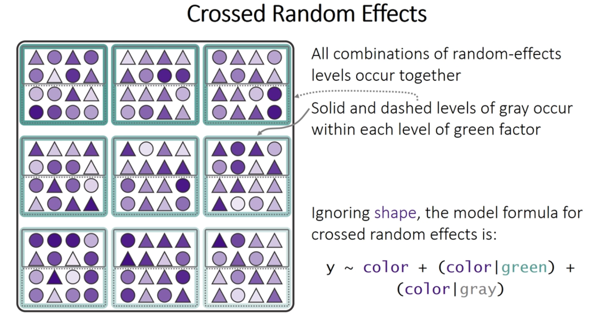
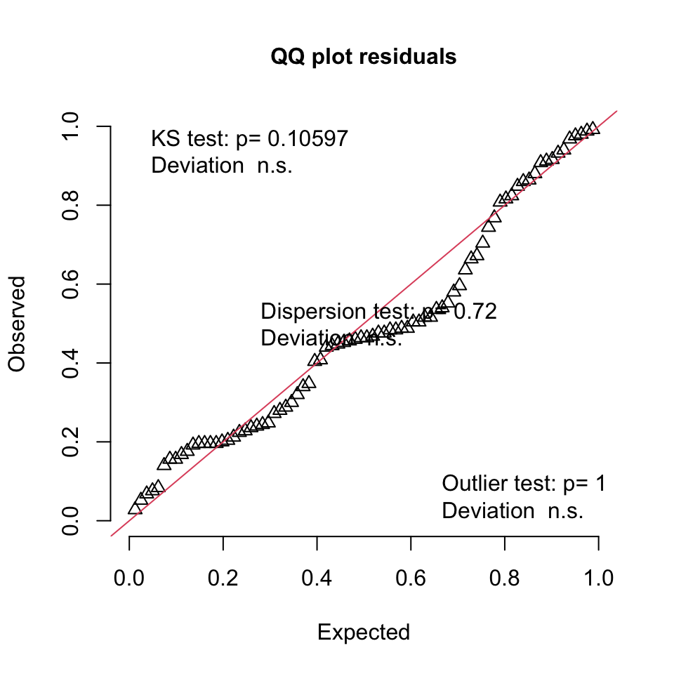
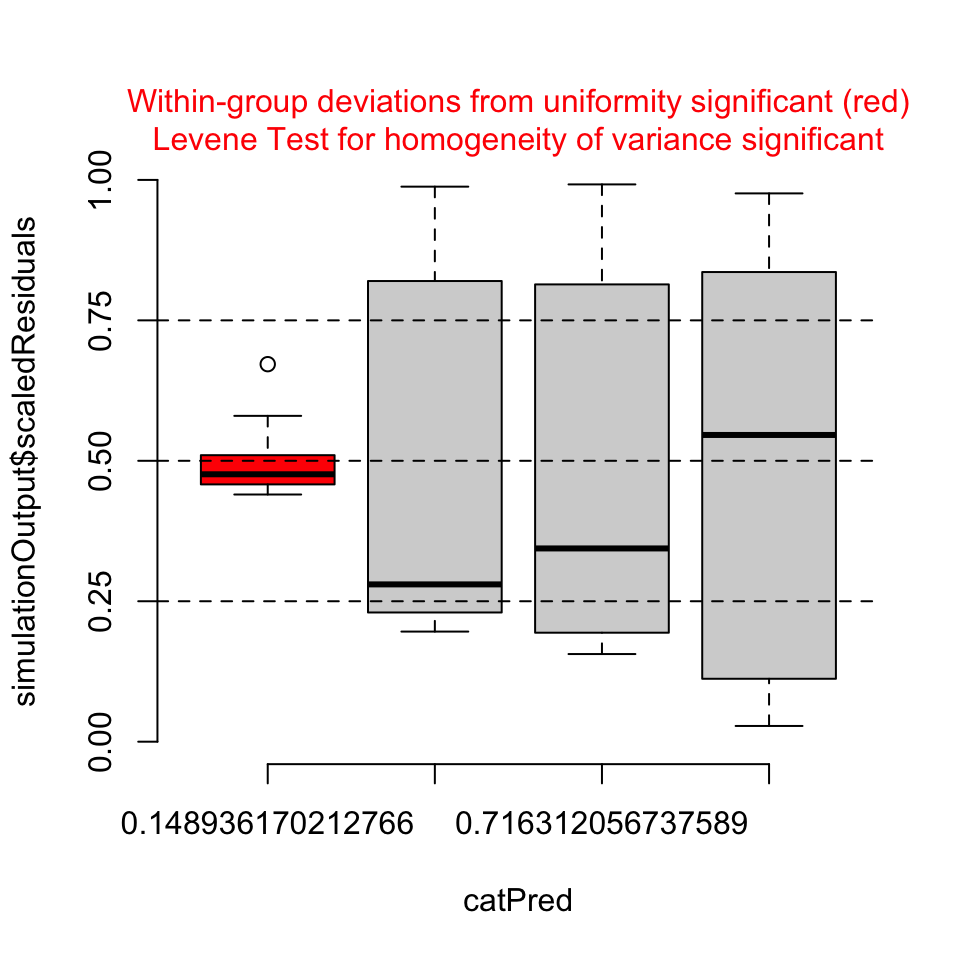
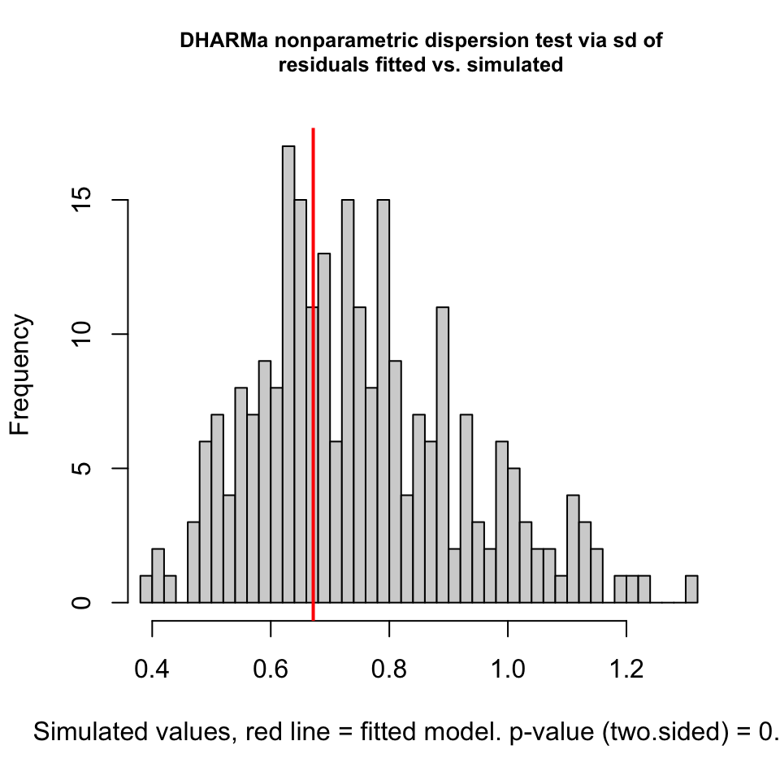
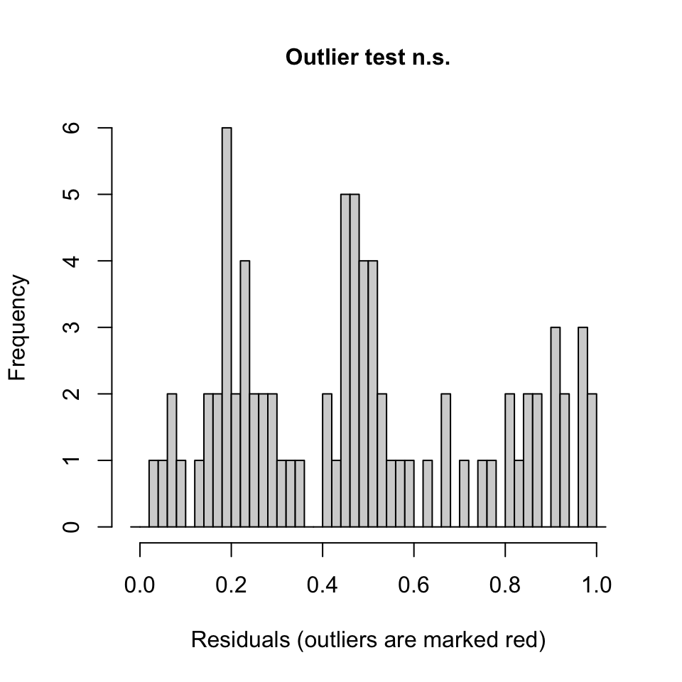
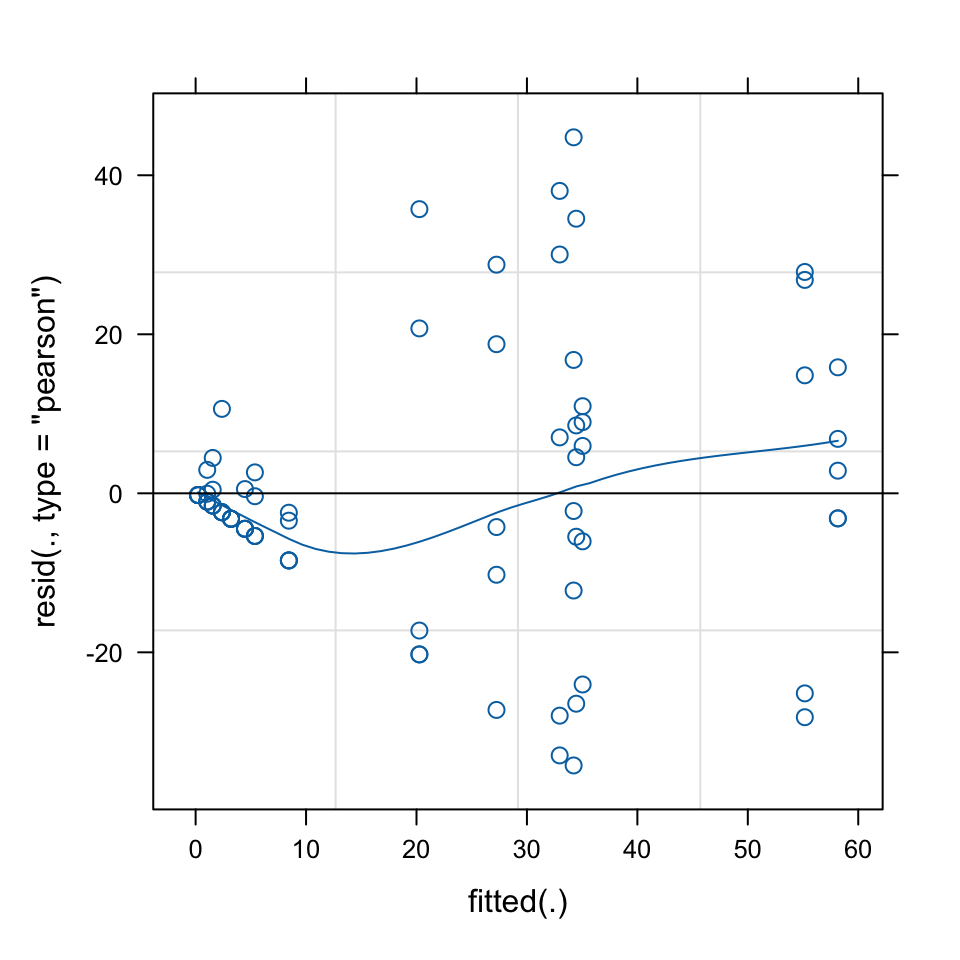
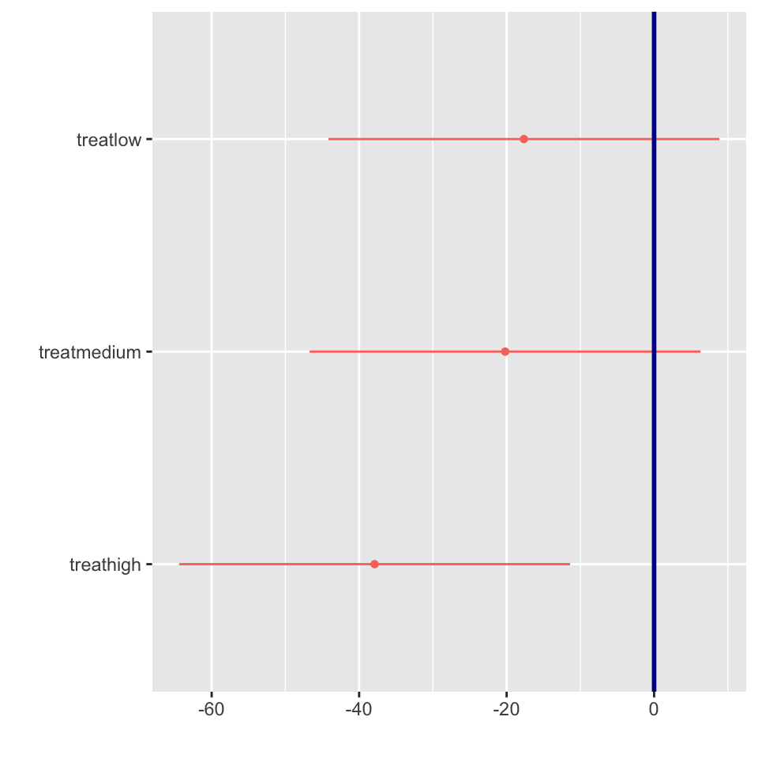
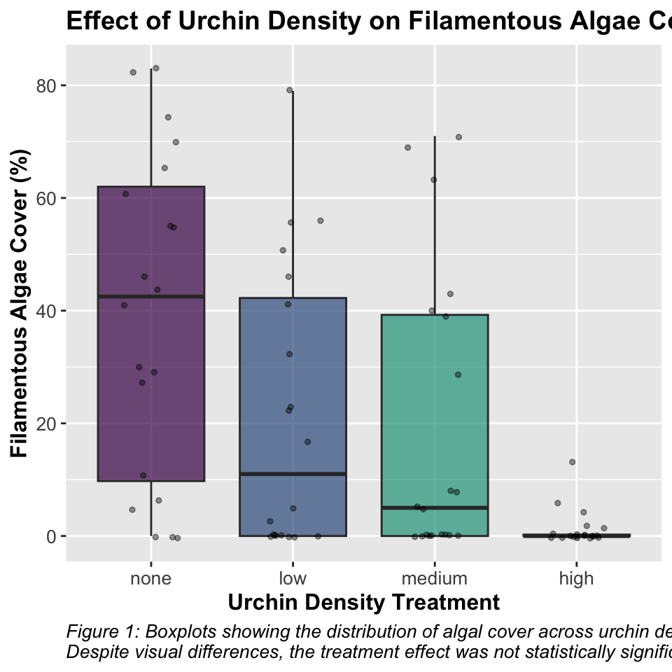
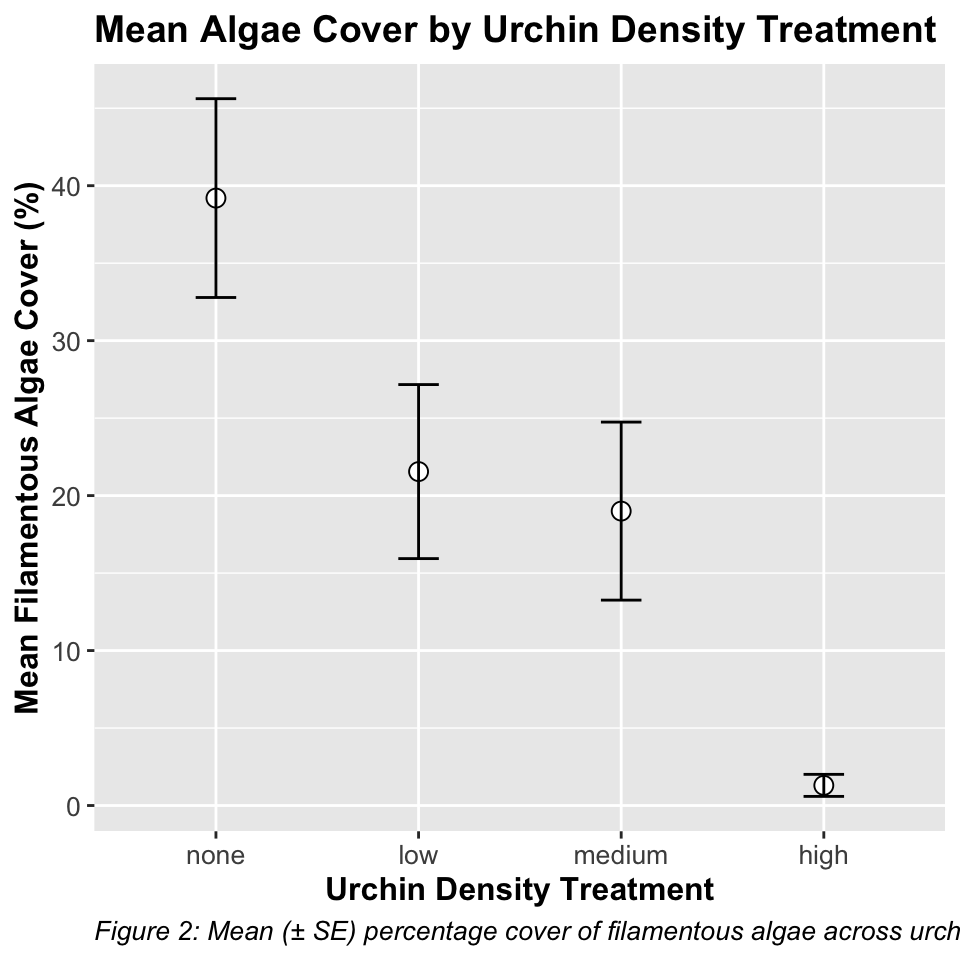

In this experimental design, patch is nested within treat because each patch received only one treatment level. This is a hierarchical design where the effect of patches must be considered within each treatment. Following the approach used in Quinn & Keough (2002), we’ll use a traditional nested ANOVA.
nested Anova with base R
# other ways using aov built in# This will give you the correct F-test using PATCH within TREAT as error termnested_model <-aov(algae ~ treat +Error(treat:patch), data = u_df)summary(nested_model)
Error: treat:patch
Df Sum Sq Mean Sq F value Pr(>F)
treat 3 14429 4810 2.717 0.0913 .
Residuals 12 21242 1770
---
Signif. codes: 0 '***' 0.001 '**' 0.01 '*' 0.05 '.' 0.1 ' ' 1
Error: Within
Df Sum Sq Mean Sq F value Pr(>F)
Residuals 64 19110 298.6
Nested ANOVA with AFEX package
Using afex package (recommended for unbalanced designs)
The afex package is specifically designed for ANOVA with Type III SS
handles nested designs well
# This works and gives you the correct answermodel_afx <-aov_car(algae ~ treat +Error(patch), data = u_df) # note this is not the best but would work as its less powerful# ,fun_aggregate = meansummary(model_afx)
Nested Design - such that a sample can exist only within a larger grouping
RANDOM INTERCEPT - FIXED SLOPE -y ~ color + (1|green_box/grey_box)
y ~ color + (1 | greenbox) + (1 | green_box:grey_box). It models random variation in the intercept for each patch, and also for each quadrat within each patch
RANDOM INTERCEPT - RANDOM SLOPEy ~ color + (color|green_box/grey_box)
Fully crossed design

crossed design random intercept and random slope
y ~ color + (1 | green_box) + (1 | gray_box)
crossed design random intercept and random slope y~ color + (color|green_box) + (color|gray_box)
(color | green_box) is shorthand for (1 + color | green_box). This part of the formula specifies a random intercept and a random slope for the color variable within the levels of green_box.
(color | gray_box) is shorthand for (1 + color | gray_box). Similarly, this specifies a random intercept and a random slope for color within the levels of gray_box
# Fit the model with treatment as fixed effect and patch nested within treatment as randommixed_model <-lmer(algae ~ treat + (1|patch), data = u_df,control =lmerControl(calc.derivs =FALSE) # can speed up and help convergence# control = lmerControl(optimizer = "bobyqa",# optCtrl = list(maxfun = 2e5)) )# Model summarysummary(mixed_model)
Linear mixed model fit by REML. t-tests use Satterthwaite's method [
lmerModLmerTest]
Formula: algae ~ treat + (1 | patch)
Data: u_df
Control: lmerControl(calc.derivs = FALSE)
REML criterion at convergence: 682.2
Scaled residuals:
Min 1Q Median 3Q Max
-1.9808 -0.3106 -0.1093 0.2831 2.5910
Random effects:
Groups Name Variance Std.Dev.
patch (Intercept) 294.3 17.16
Residual 298.6 17.28
Number of obs: 80, groups: patch, 16
Fixed effects:
Estimate Std. Error df t value Pr(>|t|)
(Intercept) 39.200 9.408 12.000 4.167 0.00131 **
treatlow -17.650 13.305 12.000 -1.327 0.20934
treatmedium -20.200 13.305 12.000 -1.518 0.15485
treathigh -37.900 13.305 12.000 -2.849 0.01466 *
---
Signif. codes: 0 '***' 0.001 '**' 0.01 '*' 0.05 '.' 0.1 ' ' 1
Correlation of Fixed Effects:
(Intr) tretlw trtmdm
treatlow -0.707
treatmedium -0.707 0.500
treathigh -0.707 0.500 0.500
Mixed Model ANOVA with Random Effects
METHOD 1 - the F-distribution with estimated degrees of freedom
Accounts for the uncertainty in variance component estimation
More conservative (higher p-values)
Better for small samples
METHOD 2 - the Chi Square
Assumes variance components are known (not estimated)
More liberal (lower p-values)
Assumes large samples
Relationship between these tests is
Chi-square = F × numerator df
Why Different Results?
F-test accounts for denominator df (12 in your case) - reflects sample size
Chi-square assumes infinite denominator df - assumes large samples
Rule of Thumb
under 100 observations or < 20 random effect levels: Use F-test
over 500 observations and > 50 random effect levels: Chi-square is okay
In between: F-test is safer
# Type III ANOVA with F-statistics (not chi-square) using Satterthwaite's method# The issue was that you had "type = F" which should be "test.statistic = 'F'"satt_result <-Anova(mixed_model, type =3, test.statistic ="F",ddf ="Satterthwaite")print(satt_result)
Analysis of Deviance Table (Type III Wald F tests with Kenward-Roger df)
Response: algae
F Df Df.res Pr(>F)
(Intercept) 17.3616 1 12 0.001307 **
treat 2.7171 3 12 0.091262 .
---
Signif. codes: 0 '***' 0.001 '**' 0.01 '*' 0.05 '.' 0.1 ' ' 1
Alternative method to do the mixed model ANOVA
# Alternative using car package# The parameter is "test.statistic", not "type"anova_car <-Anova(mixed_model, type =3, test.statistic ="Chisq")print(anova_car)
- \(\alpha_i\) is the fixed effect of treatment \(i\)
- \(\beta_{j(i)}\) is the random effect of patch \(j\) nested within treatment \(i\)
- \(\epsilon_{ijk}\) is the residual error for quadrat \(k\) in patch \(j\) within treatment \(i\)
satt_result
Analysis of Deviance Table (Type III Wald F tests with Kenward-Roger df)
Response: algae
F Df Df.res Pr(>F)
(Intercept) 17.3616 1 12 0.001307 **
treat 2.7171 3 12 0.091262 .
---
Signif. codes: 0 '***' 0.001 '**' 0.01 '*' 0.05 '.' 0.1 ' ' 1
Lecture 13 Assumption Tests
Creates all 4 diagnostic plots automatically
# 2. Simulate residuals from the fitted mixed-effects model# We set a seed for reproducibility of the simulationset.seed(123) simulation_output <-simulateResiduals(fittedModel = mixed_model, # Number of simulations, 500 is a good numberplot =FALSE) # We will plot this manually in the next step# 3. Create the diagnostic plots# Create only the Q-Q uniformity plotplotQQunif(simulation_output)

# Create only the residuals vs. predicted values plotplotResiduals(simulation_output)

# 4. Optional: Perform formal tests for dispersion and outliers# These results are also shown on the plot, but you can run them separatelytestDispersion(simulation_output)

DHARMa nonparametric dispersion test via sd of residuals fitted vs.
simulated
data: simulationOutput
dispersion = 0.89422, p-value = 0.72
alternative hypothesis: two.sided
testOutliers(simulation_output)

DHARMa outlier test based on exact binomial test with approximate
expectations
data: simulation_output
outliers at both margin(s) = 0, observations = 80, p-value = 1
alternative hypothesis: true probability of success is not equal to 0.007968127
95 percent confidence interval:
0.00000000 0.04506404
sample estimates:
frequency of outliers (expected: 0.00796812749003984 )
0
plot(mixed_model, type =c("p", "smooth"))

Cooks influence plot using car
this will tell you if there are outliers greater than the standard 0.5 cooks distance
Warning: Using the `size` aesthetic with geom_segment was deprecated in ggplot2 3.4.0.
ℹ Please use the `linewidth` aesthetic instead.
ℹ The deprecated feature was likely used in the dotwhisker package.
Please report the issue at <https://github.com/fsolt/dotwhisker/issues>.

VarCorr(mixed_model)
Groups Name Std.Dev.
patch (Intercept) 17.156
Residual 17.280
# allFit(mixed_model)
Lecture 13: Post-hoc Comparisons
Although the main effect of treatment was not significant in the nested ANOVA (p = r format(p_treat, digits=3)), we can still examine the mean differences between treatments to understand patterns in the data. However, we should interpret these with caution given the lack of statistical significance at the α = 0.05 level.
treat emmean SE df lower.CL upper.CL
none 39.2 9.41 12 18.70 59.7
low 21.6 9.41 12 1.05 42.0
medium 19.0 9.41 12 -1.50 39.5
high 1.3 9.41 12 -19.20 21.8
Warning: EMMs are biased unless design is perfectly balanced
Confidence level used: 0.95
Lecture 13: Tukey Pairwise Comparisons
# Pairwise comparisons with Tukey adjustmentpairs <-pairs(emm, adjust ="sidak")pairs
contrast estimate SE df t.ratio p.value
none - low 17.65 13.3 12 1.327 0.7557
none - medium 20.20 13.3 12 1.518 0.6356
none - high 37.90 13.3 12 2.849 0.0848
low - medium 2.55 13.3 12 0.192 1.0000
low - high 20.25 13.3 12 1.522 0.6331
medium - high 17.70 13.3 12 1.330 0.7534
P value adjustment: sidak method for 6 tests
Lecture 13: Letter Display
# Extract compact letter display for plottingcld <- multcomp::cld(emm, alpha =0.05, Letters = letters)cld
treat emmean SE df lower.CL upper.CL .group
high 1.3 9.41 12 -19.20 21.8 a
medium 19.0 9.41 12 -1.50 39.5 a
low 21.6 9.41 12 1.05 42.0 a
none 39.2 9.41 12 18.70 59.7 a
Warning: EMMs are biased unless design is perfectly balanced
Confidence level used: 0.95
P value adjustment: tukey method for comparing a family of 4 estimates
significance level used: alpha = 0.05
NOTE: If two or more means share the same grouping symbol,
then we cannot show them to be different.
But we also did not show them to be the same.
Interpretation of Treatment Comparisons The mean algae cover for the Control treatment (1.30%) appears considerably lower than for the reduced urchin density treatments (66% Density: 21.55%, 33% Density: 19.00%, Removed: 39.20%). While the visual pattern suggests an inverse relationship between urchin density and algae cover, with complete removal showing the highest algae cover, the nested ANOVA showed that these differences were not statistically significant at the α = 0.05 level (p = xxxx). The high variability among patches within treatments likely contributed to the lack of statistical significance for the treatment effect.
Lecture 13: Visualization
# Create boxplotggplot_boxplot <-ggplot(u_df, aes(x = treat, y = algae, fill = treat)) +geom_boxplot(alpha =0.7, outlier.shape =NA) +geom_jitter(width =0.2, alpha =0.4, size =1) +scale_fill_viridis_d(option ="D", end =0.85) +labs(title ="Effect of Urchin Density on Filamentous Algae Cover",x ="Urchin Density Treatment",y ="Filamentous Algae Cover (%)",caption ="Figure 1: Boxplots showing the distribution of algal cover across urchin density treatments.\nDespite visual differences, the treatment effect was not statistically significant (p = 0.091)." ) +# theme_cowplot() +theme(legend.position ="none",plot.title =element_text(face ="bold", size =14),axis.title =element_text(face ="bold", size =12),axis.text =element_text(size =10),plot.caption =element_text(hjust =0, face ="italic", size =10) )print(ggplot_boxplot)

Lecture 13: Means Plot
text
# Create means plotmeans_plot <-ggplot(summary_stats, aes(x = treat, y = mean, group =1)) +# geom_line(size = 1) +geom_point(size =3, shape =21, fill ="white") +geom_errorbar(aes(ymin = mean - se, ymax = mean + se), width =0.2) +labs(title ="Mean Algae Cover by Urchin Density Treatment",x ="Urchin Density Treatment",y ="Mean Filamentous Algae Cover (%)",caption ="Figure 2: Mean (± SE) percentage cover of filamentous algae across urchin density treatments." ) +# theme_cowplot() +theme(plot.title =element_text(face ="bold", size =14),axis.title =element_text(face ="bold", size =12),axis.text =element_text(size =10),plot.caption =element_text(hjust =0, face ="italic", size =10) )print(means_plot)

Lecture 13: Discussion
Scientific Interpretation Our nested ANOVA analysis revealed substantial spatial heterogeneity in algae cover, with significant variation among patches within each treatment (p < 0.001). Surprisingly, the effect of urchin density treatments on filamentous algae cover was not statistically significant at the α = 0.05 level (p = 0.091), despite apparent trends in the data. The descriptive statistics show a pattern where algae cover appears to increase as urchin density decreases, with the Control treatment (mean = 1.3%) showing minimal algae cover compared to reduced density treatments (66% Density: 21.55%, 33% Density: 19.00%, and Removed: 39.20%). This pattern suggests a potential density-dependent relationship between urchin grazing and algal abundance, but the high variability among patches masked the treatment effect. The substantial variance component associated with patches nested within treatments (294.31, approximately 39.5% of total variance) underscores the importance of spatial heterogeneity in structuring algal communities. This finding highlights the necessity of accounting for spatial variability when designing and analyzing ecological field experiments. From an ecological perspective, these results suggest that while sea urchins may influence algal communities through grazing, local environmental factors and patch-specific conditions play a dominant role in determining algae cover. This has important implications for ecosystem management, as it indicates that the effects of urchin density manipulations may be context-dependent and influenced by local environmental conditions.
Comparison with Traditional Nested ANOVA
The linear mixed model approach provides similar results to the traditional nested ANOVA approach. The main advantage of the mixed model is the more elegant handling of random effects and the extensive diagnostic tools available through packages like DHARMa.
The mixed model approach confirms that:
Treatment effects are not significant (p = 0.091)
In both methods, the key ecological finding is the strong spatial heterogeneity in algal cover that overrides the grazing effect of urchins at different densities.